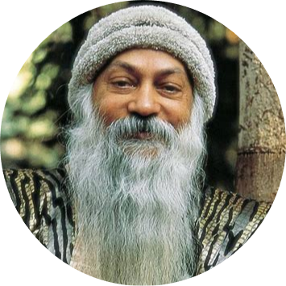

*Bhagwan Shree Rajneesh*
*1931-1990*
Agni which means fire in the vedas is a sect that represent the desire in us humans for materialistic concepts created by society. The sect helps us tries to help us
accept and surpass these desires as these desires only give us temporary happiness. You cannot reject your desires they are what make you human and not robots. Acharya Rajneesh teaches us that materialistic desire can hinder our journey to enlightenment
as it fills us with envy and makes us despair other people for their luxury but accepting them and overcoming them slowly can help us achive enlightenment.
The 10 commandments created by his holiness
1. Never obey anyone's command unless it is coming from within you also.
2. There is no God other than life itself.
3. Truth is within you, do not search for it elsewhere.
4. Love
is prayer.
5. To become a nothingness is the door to truth. Nothingness itself is the means, the goal and attainment.
6. Life is now and here.
7. Live wakefully.
8. Do not swim- float.
9. Die each moment so that you can be new each
moment.
10. Do not search. That which is, is. Stop and see.
He emphasised complete inner freedom and the responsibility to oneself, not demanding superficial behavioural changes, but a deeper, inner transformation. Desires were to be accepted
and surpassed rather than denied. Once this inner flowering had taken place, desires would be left behind.